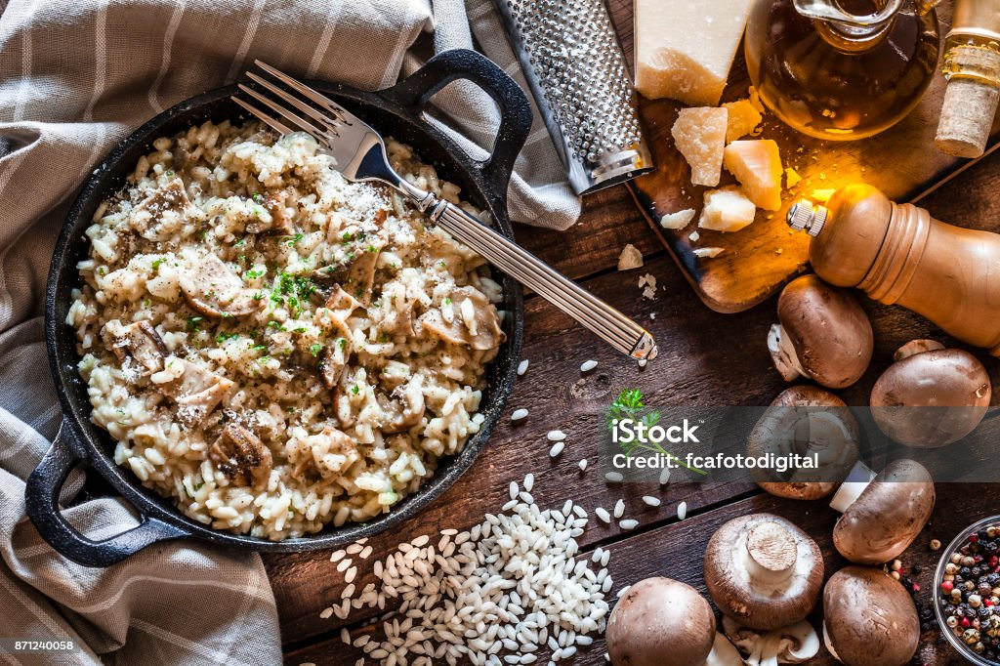

Risotto

Description
Risotto is an Italian dish made by cooking a starchy, short grain rice like arborio with stock until it becomes creamy. When you serve it on a plate, risotto should spread out into a silky, spoonable pool.
Ingredients
- 350g Pack ready chopped butternut squash, opr half medium squash, peeled and chopped
- 2 low-sodium chicken stock cubes
- 2 tsp olive oil
- 6 good quality sausages, meat squeezed from the skins and rolled into mini meatballs
- 1 large onion, finely chopped
- 2 garlic cloves, crushed
- 6-8 thyme sprigs, leaves picked and chopped
- 1/2 tsp turmeric
- 200g risotto rice
- 25g parmesan, grated, plus a little more to serve
Method
- Boil the kettle. Put the squash in a heatproof bowl, add a splash of water and cover with cling film. Microwave on High for 8-10 mins or until the squash is tender. Meanwhile, crumble the stock cubes into a pan, add 1.2 litres hot water from the kettle and set over a low heat to simmer gently.
- Heat the oil in a large, high-sided frying pan. Add the sausage meatballs and roll them around in the pan for 5-10 mins until browned all over and cooked through. Remove from the pan and set aside. Add the onion and sizzle gently for 5 mins, then add the garlic and cook for 1 min more, stirring to prevent it from burning. Stir in the thyme, turmeric and risotto rice for 1 min, coating the rice in the oil from the pan. Start adding the stock, a ladleful at a time, stirring well every 1-2 mins until the liquid is absorbed and the rice is cooked.
- Mash half the squash and add to the pan along with the sausage meatballs and Parmesan. Stir, then top with the remaining squash, cover with a lid and leave for 2 mins. Serve with extra Parmesan.